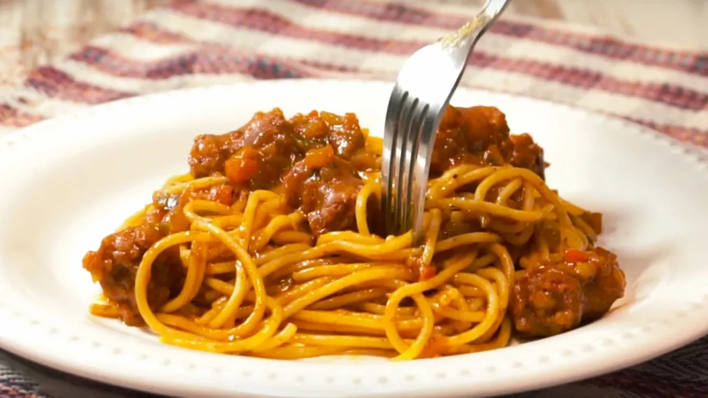

Fideos con Tuco de la Abuela Rosa
Esta es la receta secreta que ha pasado de generación en generación. ¡Ideal para los domingos en familia!

Ingredientes:
- 500g de fideos
- 1 lata de pure de tomate
- 1 cebolla picada
- sal y pimienta a gusto
pasos de preparación
- Hervir el agua con sal en una olla grande.
- Mientras tanto, rehogar la cebolla y agregar el tomate en una sartén.
- Cuando la pasta esté al dente, colarla y mezclar con la salsa.